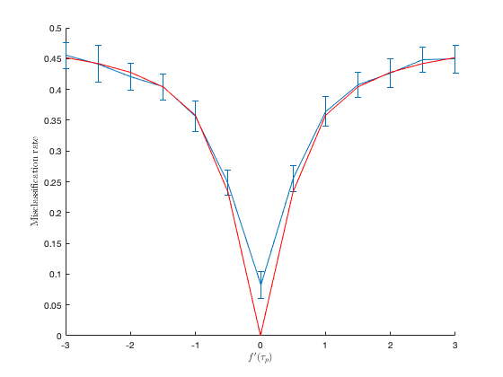
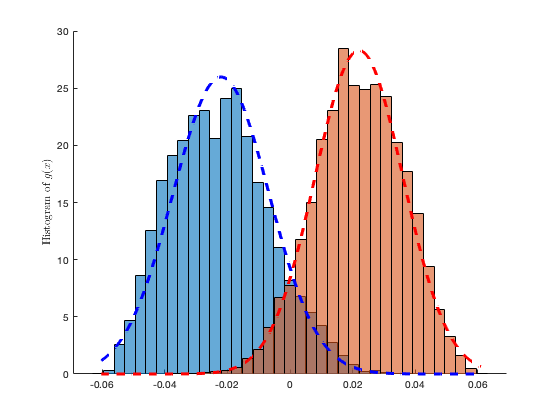
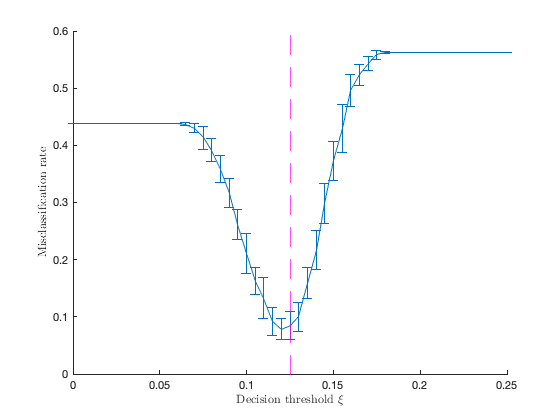

Section 4.5.3 Kernel ridge regression
This page contains simulations in Section 4.5.3.
Contents
Classification of two mixture with same mean and covariance trace
close all; clear; clc cs = [1/2 1/2]; k = length(cs); % number of classes p = 512; n = 2048; n_test = 512; means = @(i) zeros(p,1); covs = @(i) toeplitz((4*(i-1)/10).^(0:(p-1))); Delta_means = means(1)-means(2); Delta_covs = covs(1) - covs(2); gamma = 1; tau = 2*trace(cs(1)*covs(1) + cs(2)*covs(2))/p; fp_tau_loop = -3:.5:3; store_error = zeros(length(fp_tau_loop),3); iter = 1; for fp_tau = fp_tau_loop derivs=[4 fp_tau 2]; coeffs=zeros(1,length(derivs)); for i=1:length(derivs) coeffs(i)=derivs(length(derivs)+1-i)/factorial(length(derivs)-i); end f = @(x) polyval(coeffs,x-tau); nb_average_loop = 30; store_output = zeros(nb_average_loop,1); for average_index = 1:nb_average_loop W=zeros(p,n); W_test=zeros(p,n_test); for i=1:k W(:,sum(cs(1:(i-1)))*n+1:sum(cs(1:i))*n)=covs(i)^(1/2)*randn(p,cs(i)*n); W_test(:,sum(cs(1:(i-1)))*n_test+1:sum(cs(1:i))*n_test)=covs(i)^(1/2)*randn(p,cs(i)*n_test); end X=zeros(p,n); X_test=zeros(p,n_test); for i=1:k X(:,sum(cs(1:(i-1)))*n+1:sum(cs(1:i))*n)=W(:,sum(cs(1:(i-1)))*n+1:sum(cs(1:i))*n)+means(i)*ones(1,cs(i)*n); X_test(:,sum(cs(1:(i-1)))*n_test+1:sum(cs(1:i))*n_test)=W_test(:,sum(cs(1:(i-1)))*n_test+1:sum(cs(1:i))*n_test)+means(i)*ones(1,cs(i)*n_test); end XX = X'*X/p; K = f(-2*(XX)+diag(XX)*ones(1,n)+ones(n,1)*diag(XX)'); y = [-ones(cs(1)*n,1);ones(cs(2)*n,1)]; y_test = [-ones(cs(1)*n_test,1);ones(cs(2)*n_test,1)]; inv_Q = K+n/gamma*eye(n); Q_y = inv_Q\y; Q_1 = inv_Q\ones(n,1); b = sum(Q_y)/sum(Q_1); alpha = Q_y-Q_1*b; g = @(Y) alpha'*f(diag(XX)*ones(1,size(Y,2))+ones(n,1)*diag(Y'*Y/p)'-2*(X'*Y/p))+b; g_test = g(X_test)'; store_output(average_index) = 1 - 1/n_test*(sum(g_test(1:cs(1)*n_test)<0)+sum(g_test(cs(1)*n_test+1:end)>0 )); end % theory D = -2*derivs(2)*norm(Delta_means)^2 + derivs(3)*( trace(Delta_covs)^2 + 2*trace(Delta_covs*Delta_covs) )/p; E = @(a) cs(2) - cs(1) + 2*(-1)^a*(1-cs(a))*gamma*cs(1)*cs(2)*D/p; V = @(a) 8*gamma^2*cs(1)^2*cs(2)^2*( derivs(3)^2*(trace(Delta_covs))^2*trace(covs(a)*covs(a))/p/p + 2*derivs(2)^2*( Delta_means'*covs(a)*Delta_means + trace( covs(a)*( covs(1)/cs(1) + covs(2)/cs(2) ) )/n ) )/p/p; store_error(iter,:) = [mean(store_output), std(store_output), cs(1)*qfunc(-E(1)/sqrt(V(1))) + cs(2)*qfunc(E(2)/sqrt(V(2)) )]; iter = iter + 1; end figure hold on errorbar(fp_tau_loop, store_error(:,1), store_error(:,2)) plot(fp_tau_loop, store_error(:,3), 'r') xlabel( '$f^\prime(\tau_p)$', 'Interpreter', 'latex') ylabel('Misclassification rate', 'Interpreter', 'latex')
Normal approximation of soft decision function 
close all; clear; clc cs = [1/2 1/2]; k = length(cs); % nb of classes n = 2048; n_test = 512; gamma = 1; % regularization f = @(t) exp(-t/2); % RBF kernel data_choice = 'MNIST'; % 'MNIST', 'fashion', switch data_choice case 'MNIST' selected_labels=[7 9]; % mean [0 1], [5 6] init_data = loadMNISTImages('../datasets/MNIST/train-images-idx3-ubyte'); init_labels = loadMNISTLabels('../datasets/MNIST/train-labels-idx1-ubyte'); case 'fashion' selected_labels=[8 9]; init_data = loadMNISTImages('../datasets/fashion-MNIST/train-images-idx3-ubyte'); init_labels = loadMNISTLabels('../datasets/fashion-MNIST/train-labels-idx1-ubyte'); case 'Kuzushiji' selected_labels=[3 4]; init_data = loadMNISTImages('../datasets/Kuzushiji-MNIST/train-images-idx3-ubyte'); init_labels = loadMNISTLabels('../datasets/Kuzushiji-MNIST/train-labels-idx1-ubyte'); case 'kannada' selected_labels=[4 8]; init_data = loadMNISTImages('../datasets/kannada-MNIST/train-images-idx3-ubyte'); init_labels = loadMNISTLabels('../datasets/kannada-MNIST/train-labels-idx1-ubyte'); end [labels,idx_init_labels]=sort(init_labels,'ascend'); images=init_data(:,idx_init_labels); init_n=length(images(1,:)); p=length(images(:,1)); mean_images=mean(images,2); norm2_images=0; for i=1:init_n norm2_images=norm2_images+1/init_n*norm(images(:,i)-mean_images)^2; end images=(images-mean_images*ones(1,size(images,2)))/sqrt(norm2_images)*sqrt(p); selected_images=[]; MNIST = cell(length(selected_labels),1); j=1; for i=selected_labels selected_images=[selected_images images(:,labels==i)]; MNIST{j}=images(:,labels==i); j=j+1; end mean_selected_images=mean(selected_images,2); norm2_selected_images=mean(sum(abs(selected_images-mean_selected_images*ones(1,length(selected_images))).^2)); for j=1:length(selected_labels) MNIST{j}=(MNIST{j}-mean_selected_images*ones(1,size(MNIST{j},2)))/sqrt(norm2_selected_images)*sqrt(p); end means = @(i) mean(MNIST{i},2); MNIST_n = @(i) size(MNIST{i},2); emp_covs = @(i) 1/MNIST_n(i)*(MNIST{i}*MNIST{i}')-means(i)*means(i)'; nb_average_loop = 30; tau_estim = 0; store_output = zeros(nb_average_loop,n_test); for average_index = 1:nb_average_loop X=zeros(p,n); X_test=zeros(p,n_test); for i=1:k data = MNIST{i}(:,randperm(size(MNIST{i},2))); X(:,sum(cs(1:(i-1)))*n+1:sum(cs(1:i))*n)=data(:,1:n*cs(i)); X_test(:,sum(cs(1:(i-1)))*n_test+1:sum(cs(1:i))*n_test)=data(:,n+1:n+n_test*cs(i)); end XX = X'*X/p; tau_estim = tau_estim + 2/n*trace(XX)/nb_average_loop; K = f(-2*(XX)+diag(XX)*ones(1,n)+ones(n,1)*diag(XX)'); y = [-ones(cs(1)*n,1);ones(cs(2)*n,1)]; y_test = [-ones(cs(1)*n_test,1);ones(cs(2)*n_test,1)]; inv_Q = K+n/gamma*eye(n); Q_y = inv_Q\y; Q_1 = inv_Q\ones(n,1); b = sum(Q_y)/sum(Q_1); alpha = Q_y-Q_1*b; g = @(Y) alpha'*f(diag(XX)*ones(1,size(Y,2))+ones(n,1)*diag(Y'*Y/p)'-2*(X'*Y/p))+b; store_output(average_index,:) = g(X_test); end % theory Delta_means = means(1) - means(2); Delta_covs = emp_covs(1) - emp_covs(2); trace_delta_covs2 = trace(emp_covs(1)*emp_covs(1) + emp_covs(2)*emp_covs(2)) - trace(emp_covs(1))^2/MNIST_n(1) - trace(emp_covs(1))^2/MNIST_n(1) -2*trace(emp_covs(1)*emp_covs(2)); derivs = [f(tau_estim) -f(tau_estim)/2 f(tau_estim)/4]; %D = -2*derivs(2)*norm(Delta_means)^2 + derivs(3)*( trace(Delta_covs)^2 + 2*trace(Delta_covs*Delta_covs) )/p; D = -2*derivs(2)*norm(Delta_means)^2 + derivs(3)*( trace(Delta_covs)^2 + 2*trace_delta_covs2 )/p; E = @(a) cs(2) - cs(1) + 2*(-1)^a*(1-cs(a))*gamma*cs(1)*cs(2)*D/p; V = @(a) 8*gamma^2*cs(1)^2*cs(2)^2*( derivs(3)^2*(trace(Delta_covs))^2*(trace(emp_covs(a)*emp_covs(a)) - trace(emp_covs(a))^2/MNIST_n(a) )/p/p + 2*derivs(2)^2*( Delta_means'*emp_covs(a)*Delta_means + trace( emp_covs(a)*( emp_covs(1)/cs(1) + emp_covs(2)/cs(2) ) )/n - trace( emp_covs(a))^2/n/n ) )/p/p; xs = linspace(min(store_output(:)), max(store_output(:)), 200); figure hold on histogram(reshape(store_output(:,1:cs(1)*n_test),nb_average_loop*cs(1)*n_test,1), 30, 'Normalization', 'pdf') histogram(reshape(store_output(:,cs(1)*n_test+1:end),nb_average_loop*cs(2)*n_test,1), 30, 'Normalization', 'pdf') plot(xs,normpdf(xs,E(1),sqrt(V(1))),'b--','LineWidth',2); plot(xs,normpdf(xs,E(2),sqrt(V(2))),'r--','LineWidth',2); ylabel('Histogram of $g(x)$', 'Interpreter', 'latex')
Misclassification of real data as a function of decision threshold 
close all; clear; clc cs = [7/16 9/16]; k = length(cs); % nb of classes n = 512; n_test = 128; gamma = 1; % regularization f = @(t) exp(-t/2); % RBF kernel xi_loop = 0:0.005:0.25; store_error = zeros(length(xi_loop),2); data_choice = 'MNIST'; % MNIST or Fashion-MNIST switch data_choice case 'MNIST' selected_labels=[7 9]; % mean [0 1], [5 6] init_data = loadMNISTImages('../datasets/MNIST/train-images-idx3-ubyte'); init_labels = loadMNISTLabels('../datasets/MNIST/train-labels-idx1-ubyte'); case 'fashion' selected_labels=[8 9]; init_data = loadMNISTImages('../datasets/fashion-MNIST/train-images-idx3-ubyte'); init_labels = loadMNISTLabels('../datasets/fashion-MNIST/train-labels-idx1-ubyte'); case 'Kuzushiji' selected_labels=[3 4]; init_data = loadMNISTImages('../datasets/Kuzushiji-MNIST/train-images-idx3-ubyte'); init_labels = loadMNISTLabels('../datasets/Kuzushiji-MNIST/train-labels-idx1-ubyte'); case 'kannada' selected_labels=[4 8]; init_data = loadMNISTImages('../datasets/kannada-MNIST/train-images-idx3-ubyte'); init_labels = loadMNISTLabels('../datasets/kannada-MNIST/train-labels-idx1-ubyte'); end [labels,idx_init_labels]=sort(init_labels,'ascend'); images=init_data(:,idx_init_labels); init_n=length(images(1,:)); p=length(images(:,1)); mean_images=mean(images,2); norm2_images=0; for i=1:init_n norm2_images=norm2_images+1/init_n*norm(images(:,i)-mean_images)^2; end images=(images-mean_images*ones(1,size(images,2)))/sqrt(norm2_images)*sqrt(p); selected_images=[]; MNIST = cell(length(selected_labels),1); j=1; for i=selected_labels selected_images=[selected_images images(:,labels==i)]; MNIST{j}=images(:,labels==i); j=j+1; end mean_selected_images=mean(selected_images,2); norm2_selected_images=mean(sum(abs(selected_images-mean_selected_images*ones(1,length(selected_images))).^2)); for j=1:length(selected_labels) MNIST{j}=(MNIST{j}-mean_selected_images*ones(1,size(MNIST{j},2)))/sqrt(norm2_selected_images)*sqrt(p); end iter = 1; for xi = xi_loop nb_average_loop = 30; store_output = zeros(nb_average_loop,1); for average_index = 1:nb_average_loop X=zeros(p,n); X_test=zeros(p,n_test); for i=1:k data = MNIST{i}(:,randperm(size(MNIST{i},2))); X(:,sum(cs(1:(i-1)))*n+1:sum(cs(1:i))*n)=data(:,1:n*cs(i)); X_test(:,sum(cs(1:(i-1)))*n_test+1:sum(cs(1:i))*n_test)=data(:,n+1:n+n_test*cs(i)); end XX = X'*X/p; K = f(-2*(XX)+diag(XX)*ones(1,n)+ones(n,1)*diag(XX)'); y = [-ones(cs(1)*n,1);ones(cs(2)*n,1)]; y_test = [-ones(cs(1)*n_test,1);ones(cs(2)*n_test,1)]; inv_Q = K+n/gamma*eye(n); Q_y = inv_Q\y; Q_1 = inv_Q\ones(n,1); b = sum(Q_y)/sum(Q_1); alpha = Q_y-Q_1*b; g = @(Y) alpha'*f(diag(XX)*ones(1,size(Y,2))+ones(n,1)*diag(Y'*Y/p)'-2*(X'*Y/p))+b; g_test = g(X_test)'; store_output(average_index) = 1 - 1/n_test*(sum(g_test(1:cs(1)*n_test)<xi)+sum(g_test(cs(1)*n_test+1:end)>xi )); end store_error(iter,:) = [mean(store_output), std(store_output)]; iter = iter + 1; end figure hold on errorbar(xi_loop, store_error(:,1), store_error(:,2)) xline(cs(2) - cs(1),'--m'); xlabel('Decision threshold $\xi$', 'Interpreter', 'latex') ylabel('Misclassification rate', 'Interpreter', 'latex')